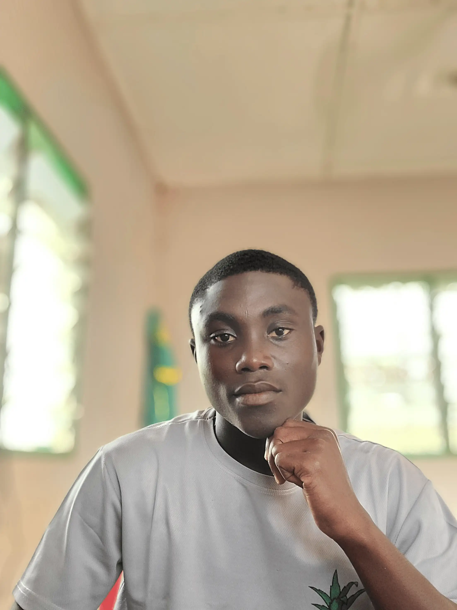
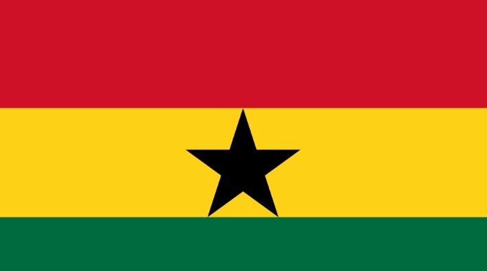

Gabriel Awushie - Tetteh
About Me
My name is Gabriel Awushie - Tetteh. I am a dedicated student currently pursuing software development through BYU-Pathway Worldwide. I enjoy solving real-world problems through clean, effective code and exploring new technologies in modern web development. When I am not studying or coding, I love following football and learning about business and digital design.

Accra, Ghana

Accra is the vibrant capital and largest city of Ghana, situated along the Gulf of Guinea on the Atlantic coast. Known for its rich cultural heritage, bustling open-air markets like Makola, and historical landmarks such as Black Star Square, Accra serves as the nation's hub for commerce, education, and creative innovation. The people of Ghana are renowned worldwide for their warmth, peaceful hospitality, and vibrant traditions.